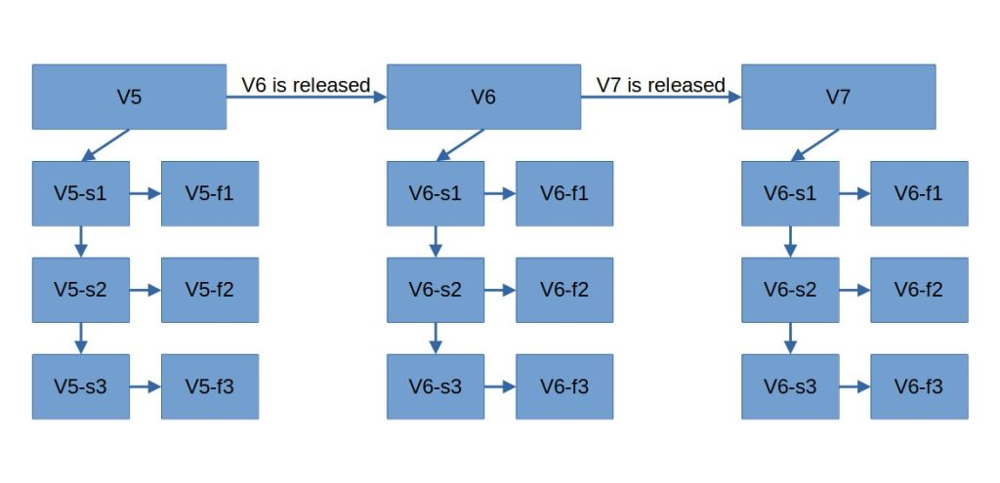
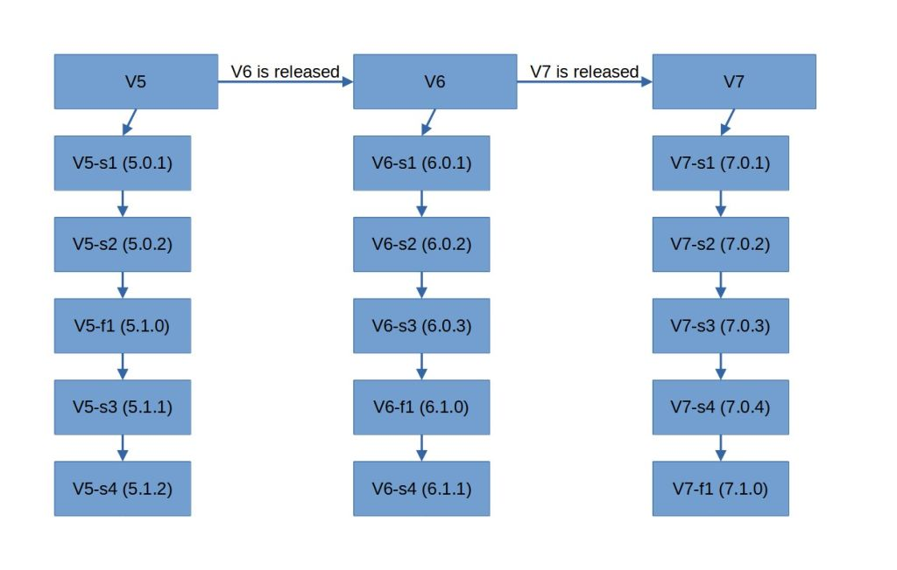
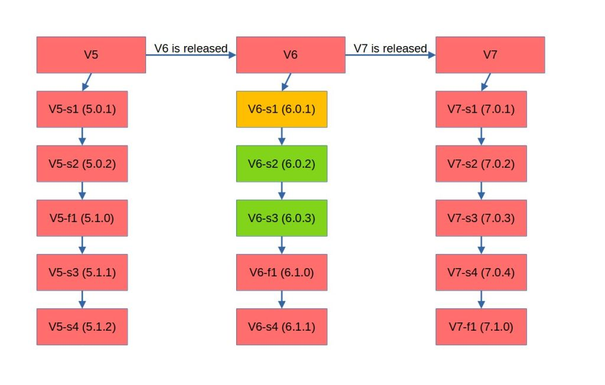
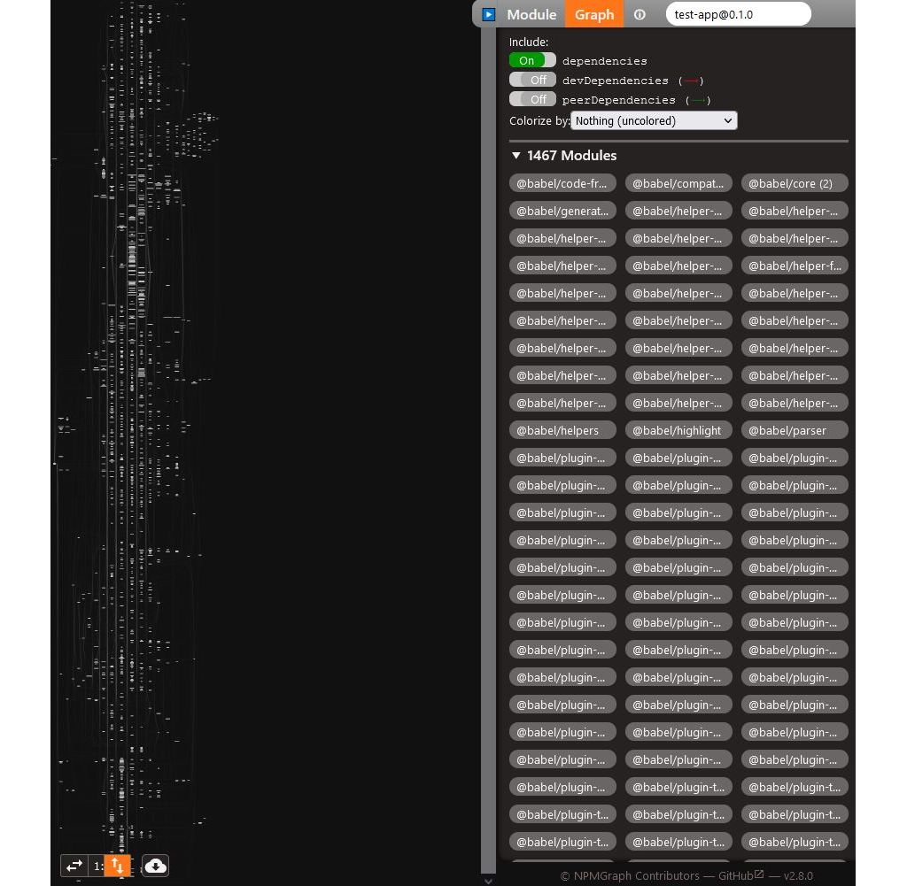
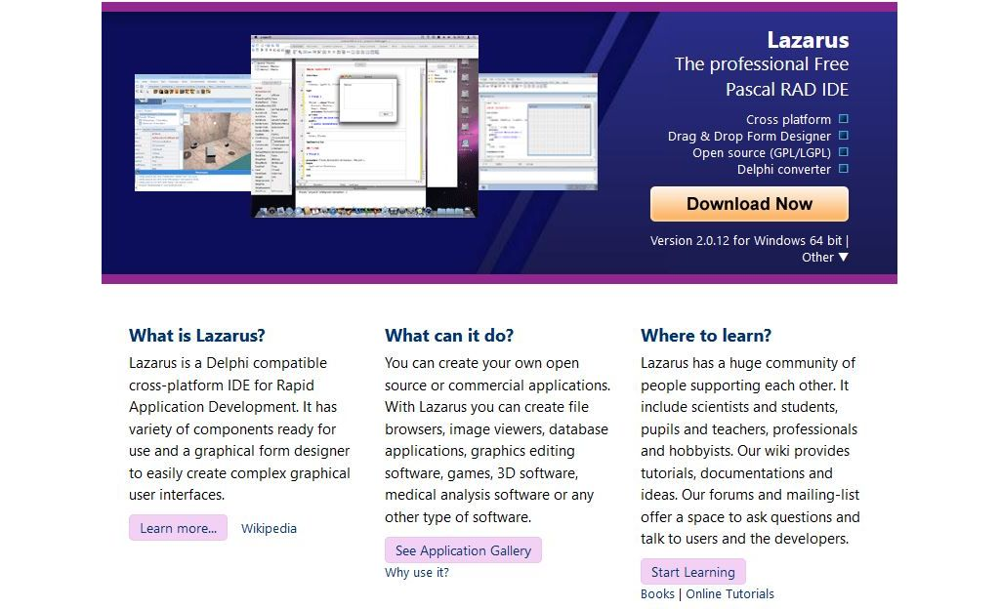
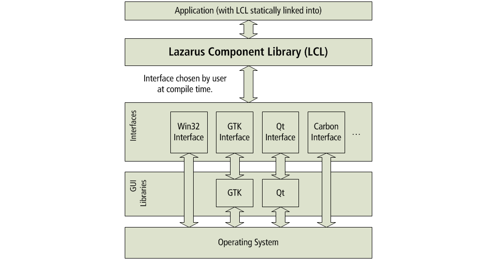

Never update anything | blog.kronis.dev
Created: November 6, 2021 10:57 PM Tags: Coding, Internet, Personal Blog URL: https://blog.kronis.dev/articles/never-update-anything
Here’s a fair warning: this article is reductio ad absurdum, therefore you shouldn’t take it as gospel. However, i do believe that this point of view is extreme enough that it usually gets shut down immediately, yet doesn’t have any frank discussion about it, which makes it the perfect subject for me to write about! To reiterate, i’m not suggesting that you go out there after reading this and never update any of your production software, merely consider the points that are offered here.
So, as the article title suggests, you should never update anything. Not your OS. Not your libraries in your software project. Not your tools. What would make someone come to this controversial idea? Actually trying to do that, of course!
When you’re telling your colleagues that you can’t really work because Windows or JetBrains IDEs need to install some updates, they’ll give you understanding, yet annoyed glances. When you tell clients that you cannot ship software because first you need to spend a few days or weeks refactoring software to keep up with the latest library releases, they will express their displeasure at you and will probably look elsewhere for someone who won’t care about updates. When your company won’t be the first to market, because about 20% of your total development capacity needs to spent on keeping up with the technical debt, which is slowly forced upon by the industry, while another 20% of the effort needs to go to writing and maintaining a test suite, the company will suffer as a result. And once you actually do get the buy-in to update the components and when it turns out that migrating from Spring to Spring Boot is actually a herculean effort that means carrying over about 50 dependencies of a legacy Java project that has about 1 million SLoC, during which you also discover that at least 20-30 of those are painfully out of date, then you’ll just start writing blog posts like this.
My premise is that updates are a massive waste of time, most of the time. Obviously, someone will jump out and say that “Hey, if you don’t update, your Windows XP installation will get added to a botnet in less than a week,” and they’ll also be right at the same time.
Types of updates are the problem
The problem here is that we never differentiate between the types of updates properly:
- major leaps in the development of the software which add new features
- security updates that don’t change any actual functionality apart from the security fix
- bug fixes that should not alter any functionality in significant ways
- small backwards compatible feature updates that are essentially opt in
There are plenty of things that you might want to feasibly change and update without any of the other functionality being altered. Actually, the situation is so bad in that regard, that most if not all of our modern software only ever has feature updates which sooner or later will have breaking changes in them. Otherwise, if you wanted to eliminate the possibility of running into breaking changes entirely, the development of any library would look like this:

In the image, we see that we have major releases (with the “V” prefix), for example, we’d have MySQL 5, that would eventually be updated to MySQL 6, MySQL 7 and MySQL 8 (which is funny, if you know anything about how that actually worked out). Esentially, you’d have a few large releases, that represent both new features being added, as well as breaking changes. Then, you have the minor versions which introduce new functionaly (with the “f” prefix) and patches (with the “s” prefix) which in this case would mean security fixes.
Essentially, i’m describing semantic versioning, where this scheme would be approximately V.f.s, where you have a clear distinction between the major, minor and patch versions. However, instead of abandoning minor releases, you’d have to keep them up to date, since in practice different minor releases are not always compatible. If you wanted to support all of the versions of your software without forcing your users to use the new features, it would mean maintaining a new instance of your codebase for every minor release in existence. And in this case we’re also simplifying things, because we assume that the patch versions will never break anything, which would probably mean that we need to preserve non-security related bugs and only fix them across minor releases.
You’d have to backport any and all security fixes from your newest versions, should the older ones also be affected. For example, if you discover a problem in V5.2.15 and fix it in V5.2.16, then you’d have to port these changes back to the current V5.1.X version and V5.0.X version, which is probably doable when you have 3 releases, but less so with 30.
And it goes the other way around, if you discover a problem in one of your older releases and the newer ones are also affected, then you have to port the changes forwards. For example, if you discover a problem in V5.0.14 and fix it in V5.0.15, then you’d have to port these changes forwards to the current V5.1.X and V5.2.X versions, where you run into the same problem as above.
In practice, things almost never work like that because that necessitates too much work. If you tried doing that, your issue tracking software could look like this:
Issue: MYSOFT-3401
Description: Security breakage in $FOO module.
Assignee: You
Status: Ready to test
Versions affected:
- V7.6.245
- V7.5.267
- ... (down to V7.0.X)
- V6.10.315
- V6.9.326
- ... (down to V6.0.X)
- V5.14.421
- V5.13.442
- ... (down to V5.0.X)
Fixed in:
- V7.6.246
- V7.5.268
- ... (down to V7.0.X)
- V6.10.316
- V6.9.327
- ... (down to V6.0.X)
- V5.14.422
- V5.13.443
- ... (down to V5.0.X)
Of course, testing all of that would be interesting, as would fixing further issues. Imagine having to do this for every single bug report and change. You’d spend days if not weeks fixing even trivial bugs if you’d have to support every single release of your software. That’s why a lot of companies just drop support for older packages and leave people with no updates at all in cases where a minor version actually does break something, which isn’t as much solving the problem, as it is simply sweeping it under the rug.
I’m sure that some of them would perhaps want to update their older versions, but it simply isn’t feasible, perhaps apart from supporting the major version as a whole and forcing people to update to the newest minor versions to keep getting support. So in reality, the list of supported versions would indeed be just the last minor releases in the first example above, which would look a bit like the following:

More doable, but still not good enough in my mind - minor versions are for new features, which you don’t necessarily want. My experience shows that oftentimes these new and supposedly backwards compatible features still break old functionality. Perhaps it’s due to some refactoring that was needed, other times there were bugs fixed that old code relied upon and assumed to be the right way to do things.
My pain is that you’ll never actually know how far you can update, seeing as the breaking changes will get you sooner or later, even if it’s supposed to just be a bug fix. In reality, you might find that you can only run your software with a subset of the released versions (orange being what you have now, green what you can update to without breakages, red being everything that won’t work):

Now, the understandable argument here is: “Breaking changes are inevitable, you should just update your code.” which is fair, but at the same time kind of useless. The industry shows that there are still plenty of projects that are stuck with JDK 8 and MySQL 5.7, or even a better example, old PHP versions like 5.6.40 and realistically cannot be updated and eventually will receive no security updates either, because all of that is simply too hard. And good luck with trying to tell your clients that now you’ll probably need to alter or rewrite a huge portion of your code that uses the now deprecated or removed packages - oftentimes they simply won’t understand that code rots with time.
Worse yet, those that don’t care about semantic versioning don’t even attempt to keep track of all of this stuff - i’ve seen projects out there in the wild, where V6.9.0 is always followed by V7.0.0 and V7.0.1 is code for “we screwed up the previous release, so this is just a hotfix”, plenty of people and orgs out there just look at version numbers like something to put in Jira and get paid for, rather than a measure of what the software is compatible with.
Noone wants updates
But that’s just the tip of the iceberg. I think i’ve briefly described while backporting security fixes and such is pretty hard, even though some operating systems still try to do that. Now, here’s a story about why updates are actually bad. In a word: breaking changes. In the aforementioned Spring migration, i updated the Flyway version and ran into the following message:
org.flywaydb.core.internal.license.FlywayEditionUpgradeRequiredException: Flyway Teams Edition or Oracle upgrade required: Oracle OLD_VERSION is no longer supported by Flyway Community Edition, but still supported by Flyway Teams Edition.
I think that this is the inevitable future of software. “Want support for older versions of stuff that you’re stuck with because of organizational reasons beyond your control? Sure, pay us!” If you look at the pricing page, you actually see that you’d need to part with 3000 USD for that sort of a license:

Now, i’m using this as an example for intentionally breaking support for older versions in a way that will hopefully (from the company’s point of view) lead to them dying off and therefore the companies won’t need to explicitly support them for a long time, thus attempting to solve the problem above. However, there are also plenty of cases out there, where updates introduce other breaking changes, oftentimes being forced upon the user against their will!
For example, i want to use Flyway, but i don’t want to be forced to use a version, which drops support for the DB that i need to use. And yet, i wasn’t even consulted about this, since the newest version is mandated by Spring Boot:
<dependency>
<groupId>org.flywaydb</groupId>
<artifactId>flyway-core</artifactId>
</dependency>
There are plenty of cases out there like this as well! For example, Docker Desktop doesn’t let you decide whether you want updates or not, unless you pay them:
And i’m sure that we’ve all also heard plenty of other horror stories of this very same trend, be it Ubuntu forcing updates with snap packages, or Windows 7 forcefully upgrading to newer releases when people step away from their computers for a bit.
In a word, the way how companies approach updates nowadays suck, especially when they break things!
Updates are bad
All you need to do is go to the “Everything is Broken” section of my blog and you will see plenty of cases of updates breaking things. In the current year, it’s gotten to the point where i treat every update like a possibly completely clean wipe and install from nothing. Therefore, backups are of the utmost importance and every update needs to have at least an hour or two set aside for when things will inevitably go wrong, as they oftentimes have in the past.
But here’s the thing - if i don’t want to rely on SaaSS, then i have to host and manage my software by myself. If i want to do that, then i need to handle the updates myself as well. Every update takes a significant amount of time and potentially can break things. And, even more importantly, if there are any non-standard configuration changes done (even the theme of this very blog), then things become more likely to break and waste my time. But i don’t have unlimited amounts of time.
Actually, i don’t have enough time to do my day job, learn new technologies for when it inevitably becomes stale and would otherwise lead to my career death, to also help my aging parents around the countryside estate with various chores, at the same time educate myself on both things in the industry and news in the world, as well as spend anywhere between 1-2 hours working out every day (a weight loss and personal wellness effort which seems to be working and about which i’ll write a post some day) and have any sort of enjoyment of life in general, for example, by reading a sci-fi book in the evenings.
Ergo, i cannot update. Ergo, companies cannot ship features AND handle all of the updates, without having enough tests to catch all of the problems, which they will never be able to do no matter how good their tests are without slowing down their development pace to the point where they are no longer competitive.
Breaking feature updates of any sort are a nuisance and a direct impediment to progress more often than they’re not and the more updates there are to be done, the less will be done. So don’t update!
For example, to see why we shouldn’t update software, let’s take a look at React. To date, it has over 500 versions that have been released. No, not development snapshots (even though some experimental new versions are included), publically released versions that need to be installed, managed and coped with:
But once again, that’s not the full story. Creating a simple React app with create-react-app makes us fetch an absolutely absurd amount of code, files and folders under node_modules:
The idea of anyone ever understanding what’s going on in there, or even auditing the security of all of it, is simply absurd! Don’t believe me? Have a look at a dependency graph of this newly created “Hello world” project:

There are almost 1500 different modules in there! Many of those will have updates eventually. Many of those will also have breaking changes. You will run into problems with that. And even if you don’t, the chances of something malicious getting in there, or for the development stack to get too large for you to be able to explore it is a question of time, rather one of probability. Once again, do not update!
A more stable world without updates
Let’s look at some software that’s the exact opposite. It’s stable, doesn’t have many breaking changes, and comes with “batteries included”. No, i’m not talking about Angular, because even that’s a mess in comparison, i’m talking about the Lazarus IDE, the modern and perhaps the only way to write Pascal code!

But it’s not just a tool for writing code, instead, it does something a bit more amazing and peculiar. It also includes the Lazarus Component Library, a large package of components and classes that concern not only GUI development (which, by the way, is abstracted away from the platforms entirely), but also offers lots of useful functionality that would otherwise need to be installed separately in almost any other tech stack out there:

Consider a scenario in which you want a MySQL driver for your app. In npm, you install it with bunches of dependencies. In Java, you pull it down with Maven or Gradle. In Python, you probably mess around with native extensions and have to install additional packages for your OS/container for it to even work. But with Lazarus, you drop it from the component palette into your application and are on your way. More platforms should be like that! Only support a known and trusted subset of software packages, keep them in tree and update them with the larger software package, in this case, the IDE.
Some of you might realize that what i’m describing is actually a lot like the FreeBSD approach to packages - a stable enclave of “good software”, that’s optionally built upon by “ports”, external and less table packages which the user will have to install themselves while being aware that those aren’t supported. This sort of discouragement is exactly what most of the developers behind npm should have experienced more of! Same for React, Angular and most other technologies out there!
What i’m saying is that most of the integrations, dependencies and other software should be kept “in-tree” for most tools and packages out there. To hell with dynamic linking, use stable and minimalistic packages where needed, much like Windows does instead of Linux. Not only that, but put anything and everything you will ever need within the standard library or one or two large additional libraries. When eventually people will want to do more, provide pushback and curb their enthusiasm, make them do less instead of more. Slow down their pace of development and therefore also updates, preferring stable and good software in 5 to 10 years, as opposed to a half baked SaaS trap in 2 years, which will stop being supported in 4. Yes, at this point i’m getting into why this probably won’t be possible in our current society, but my thoughts on the subject are unchanged by this reality.
It’s already happening
But that’s not to say that large, breaking releases aren’t already happening and that people aren’t sticking with the more stable stuff. Just look at JDK versions that are used in the industry:

The majority of existing projects out there are stuck with JDK 8, either due to their dependencies, their requirements, the ecosystem surrounding them, people not knowing about the benefits of the newer versions or simply not caring, or maybe the whole migration process being so time consuming, complicated and expensive that most companies out there simply don’t want to touch the idea of doing that with a 10 foot pole. Essentially, what i described above is happening, but for all of the wrong reasons!
That brings me to the next point - situations like that are unavoidable. Sooner or later, there will be a significant amount of projects out there that will be stuck on old versions. There will be plenty of .NET 2.0 projects out there that will be running on dated installations of Windows Server 2012, instead of running the latest cross platform .NET Core or nowadays just .NET 5+. There will be plenty of old Java projects out there, or old PHP 5 projects out there and so on.
And my argument is not that this should be the expected outcome, but rather that it’s something inevitable. Therefore, we should prepare for the eventual mess of legacy software, with entire languages possibly dying out and there being significant issues in finding developers for them, once it’s discovered that there’s actually software that’s mission critical running in some old forgotten server room. And the easier we’ll make dealing with old code for ourselves, the easier our lives will be - the more focus we’ll put on truly non-breaking security updates that keep your dated software alive and running well, the better our future will be.
To that end, it’s actually imperative that we slow down our development and the speed of updates, which add new features.
Forcing things to slow down
It’s important that code written 20 years in the future remain vaguely similar to what we have now, so that old codebases can be recognized. Think Java Streams API, over syntactic sugar that changes how the actual language works. Think more along the lines of a stable base, that’s well documented, thoroughly tested and helps you use it with its discoverability, instead of making you do some long forgotten Maven rituals that are like something out of Warhammer 40k, because noone bothered to write documentation in the pursuit of agility.
Bring back the old days where we engineered software to be used long term, instead of the current day world of: “Move fast and break things… oh, and don’t bother thinking about what’ll happen in 10 years, because your CV will be full of bleeding edge stuff, your bank account will be loaded and the troubles with most of the projects behind you won’t be the slightest of your concerns.” Realistically, you probably don’t care about this stuff, but on the grand scale of things, perhaps you should.
I don’t know about you, but i think that we shouldn’t even need containers for reproducible environments in the first place. We should take a page out of the BSD operating system group book, instead of the GNU/Linux distros that are patched together out of bunches of different pieces of software of vastly varying quality. We shouldn’t bend to the whims of the businesses which want things done yesterday. We should strive for the standards of engineering, where we are in control of the stacks that we work with and actually know what’s going on inside of them.
Why do we need a new Java version every year and to only support the LTS ones for 5 years? Why do we need multiple Ubuntu releases per year and to only support the LTS ones for 5 years? Why not a new release every 5 years with everything else between being just patches and non breaking changes and a new major release every 20 years instead?
If things don’t work out that way, then eventually we’ll just have bunches of clueless code monkeys that execute npm commands that they don’t understand to use frameworks and mechanisms which they have no hope of understanding to create as much value as quickly possible in the short period before all of that goes to hell and there’s the eventual breakdown of nothing working and noone having any idea of why. I’m exaggerating slightly, but sooner or later software projects out there will exceed the cognitive capabilities of any single person - the only question is whether that will happen in 50 or 500 years.
What to actually do now?
Don’t choose Clusterpoint for your project, which actually died in just a few years and now needs to be maintained in one of the legacy projects that i’m stuck in. Instead, pick PostgreSQL and use it for more than 20 years. Realistically, you can’t avoid updates entirely, but you can at least try to decrease the frequency of them that you’ll run into and will have to deal with.
Use self contained packages and only use them for the things that they are good for - for example, Ruby on Rails for a simple webapp will be a better choice than stitching together 20 different libraries. Having the freedom of choice in the library case will cause more problems than its worth.
And lastly, choose boring technology. Only use software that you’re sure will be supported in 10 years. Only use software, which has very few “unknown unknowns”. Only use software, where the development pace has slowed down to a reasonable degree, as opposed to React pulling a sneaky on everyone and introducing hooks, which was a pretty bad move, especially if you needed to migrate to them.
Use maintenance mode software:
- Debian over Fedora
- Docker Swarm over Kubernetes
- Java over Go
- Angular over React
Of course, this only applies to projects that you’re about to start. Chances are, that if you’re working in the industry and will have to handle codebases written by others, then preferring brownfield technologies will make you less happy, given that there will be more bad ones out there. Your mileage may vary and don’t expect all of the answers here.
As for the actual updates: the above approaches should decrease the frequency at which they need to be done. That said, the title of the article is not entirely honest - do install security updates and do install updates to the LTS software that you’re using, be it Ubuntu LTS, Unity LTS, Java 11, or anything else… Just be sure that you have backups that work before doing that!
Update
I’ve cleaned the text up a little bit and have decided to extract an idea about a versioning scheme out of the main body of text.
I believe that software could benefit from something more finely grained than semantic versioning.
Perhaps an alternate scheme, that goes more into detail about what’s included in any given release:
- major new functionality changes
- minor, backwards compatible’ish functionality additions
- patch, bug fixes that could still break code that’s written with them in mind
- security, fixes that should not affect code bugs as long as those do not concern security exploits
Maybe it would be possible to have those patch versions be globally unique, so that you’d know that your software V5.152.4567.7213 has had 5 major versions released so far, 152 feature releases across those major versions, 4567 bug fixes to date and 7213 security fixes? Thus, you could tie them to Jira ticket numbers or what have you, though it would probably break some ordering of these versions somewhere, so i’m not entirely sure about that. Granted, i can’t actually tell whether adding that sort of complexity would actually be good for anyone, seeing as people seem to have trouble keeping themselves to the standards set forth by semantic versioning already.